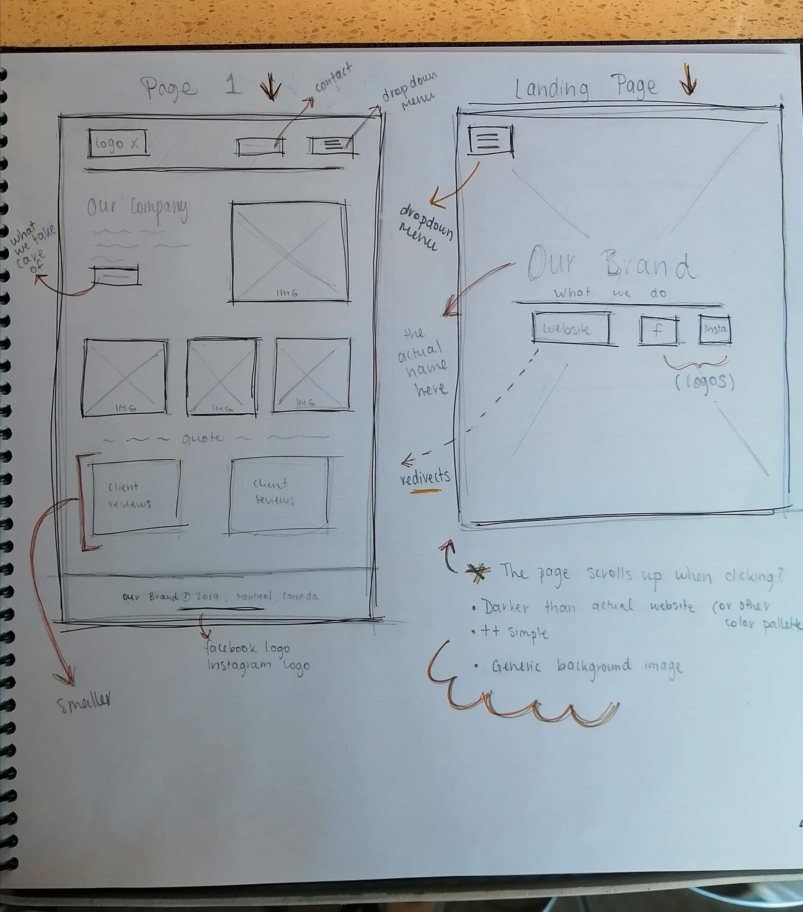
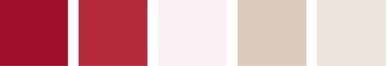
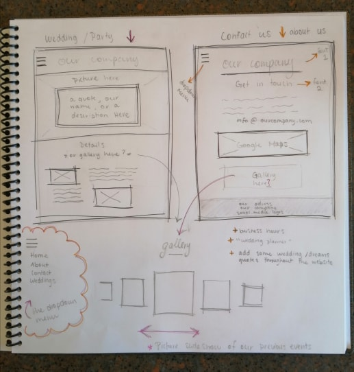

Some websites can sometimes be hard to follow through due to all the different movements and colors coming our way. First impressions are very important, therefore it is our job to make our website is appealing to the eye. This is the reason why for this project, we will be creating a very simple structure and aesthetic for our website. We will take on the role of “Event Planners” to get out of our comfort zones and try something new for the both of us. As amateurs in that work environment, we will be using images for the Internet to “advertise” our service. Therefore, this website will not look like a portfolio to either of us but rather an experiment. In the following paragraphs, we will discuss the aesthetic we are going for such as the color palette, the different text fonts, the layout and the structure of our website using JavaScript, Html and CSS.
As event planners, we are going for an organized and professional aesthetic. It will contain a very strict format and style using pastel colors, delicate fonts (For example: Caveat and Montserrat…) and monochromatic images. In other words, we want our website to be as minimal as possible without dullness. As Ludwig Mies Van Der Rohe, a furniture designer once said, “Less is more”. As for the layout, our goal is to make it neat and comprehensive. As seen in our thumbnail sketches, our home page will welcome and introduce our services to the viewers. We will have a gallery of moving images on the top center that will show the viewers the type of events we do. On that same page, we will have a menu bar that will give the audience different options such as to contact us and/or to click on the service they need which will then redirect them to that page. Each page will have a unique layout and theme such as venues, decoration,food menu and so on. It will be a simple concept to facilitate their journey through our website.

To do so, not only do we need a clean layout with a monochromatic color scheme but as well as a unique structure. Meaning a functional and interactive website design with the help of Html, Css and JavaScript. Starting with our landing page, we will have a dropdown menu on the top left of the screen. That’s where
our clients will see 3 buttons, 
two will bring them to our fake social media pages and the other will redirect them to the main page of our website. Our main goal for this page would be to use JavaScript to “scroll up” when the website button is clicked. Next, we have our main page where the client can quickly see what our company is about and what we have to offer. We will use href for most of the images as links to our subpages. As well as buttons and flexboxes to organize our text. We will still have the dropdown menu on the top left. For our second page, a background image will be framing the top half of the page,
where the dropdown menu will once again be displayed. The second half of the page is where we will have a detailed description about our services such as prices, venues, decorations and so on. If time permits it, we might even add a slideshow on the main page just to give the viewers an idea of what is coming their way. Lastly, we will have a “Contact Us” page like any other website. There will be a header with our company name in a h1 tag and a smaller h2 tag saying “Get In Touch” (or something along these lines). This is where the client will be able to easily reach us. A map will also be displayed so they know where our office is located. Using Html, we will give more details about our company, who we are and what we do. There will be a link (href) to our email address as well. The last section of the page will be a different div, in a different color to “separate” the rest of the page and which is where we will add a copyright footer.
Overall, we want to create a minimal website so that it is easy to navigate and pleasant to see by organizing and creating different sections for every service we offer. Using pastel colors, monochromatic images and a simple layout, our clients will enjoy their journey through our professional website. This will allow them to trust us to make their event as magical and successful as possible.